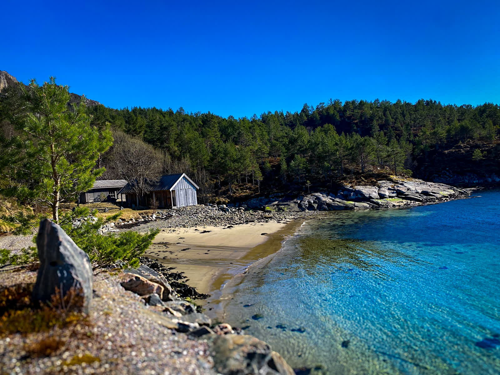
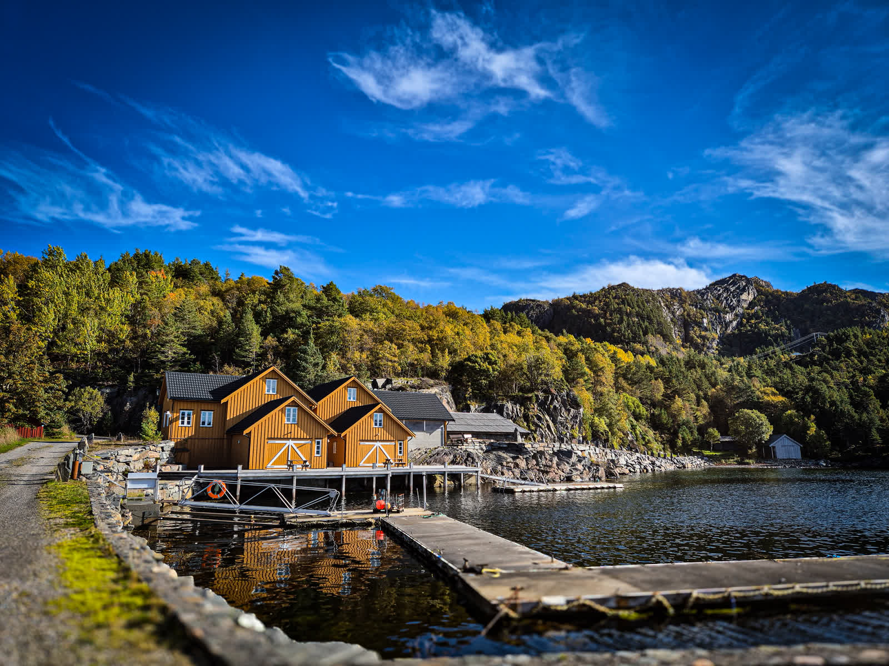
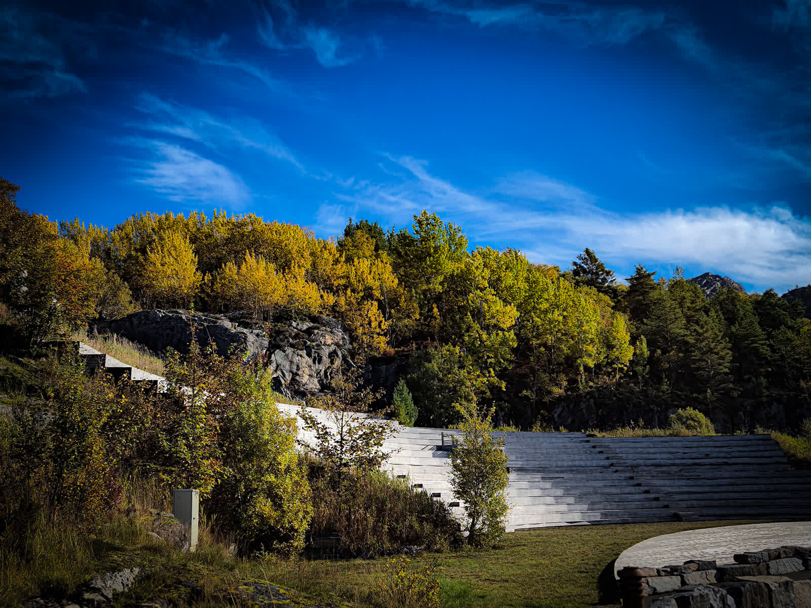

Klippfiskbrygga
The wharf building dates to approximately 1900 and was renovated between 2006 and 2009. It holds around 1,000 m² of bar, restaurant and rooms for functions and courses. The restaurant is run by Lokalkokken.
Find LokalkokkenFrei · Kristiansund · Norway
In and by the sea
A quiet coastal setting, surrounded by lush nature.
10 self-catering units across two buildings
Five self-catering units by the water. Each unit has an open-plan kitchen and living room, a bathroom and two bedrooms sleeping two each, with its own balcony and terrace.
Five self-catering apartments in Innerholmen. Each unit has an open-plan kitchen and living room, a bathroom and two bedrooms sleeping two each, with its own veranda.
Vikaneset is a historic coastal gem. Klippfisk was produced and dried here, and the site was also used for cod-liver oil production.
Today the old klippfisk wharf houses a restaurant and rooms for functions and courses. The property also has 16 apartments in total, for holiday guests and permanent residents.
The wharf building dates to approximately 1900 and was renovated between 2006 and 2009. It holds around 1,000 m² of bar, restaurant and rooms for functions and courses. The restaurant is run by Lokalkokken.
Find Lokalkokken


Vikaneset has a sauna right by our sandy beach. Here you can enjoy the sauna’s warmth and cool off in the fresh sea water.
Find sauna booking


Vikaneset has its own harbour with berths for visiting boats. Kayaks and canoes are available to rent here.
Watch for fish and crabs in the clear water


Vikaneset has an amphitheatre with 1,500 seats. It was completed in 2008, when it hosted the world premiere of the “klippfisk opera” Donna Bacalao, staged by the Opera in Kristiansund.
1,500 seats · Completed 2008
Additional views from across the property.
01 / 14
A short introduction to Vikaneset and its coastal setting.
No narration, only music. The film shows the property in summer: the red boathouses along the quay, the white wharf building out over the rock, cabins above the shore, a boat on the water, and the pier.
Phone
Address
Kjørvegen 31, 6520 Frei, Kristiansund municipality, Norway